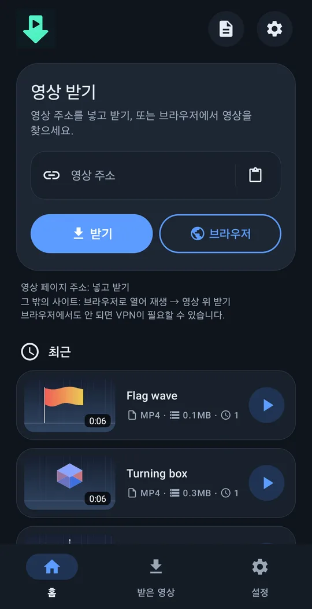
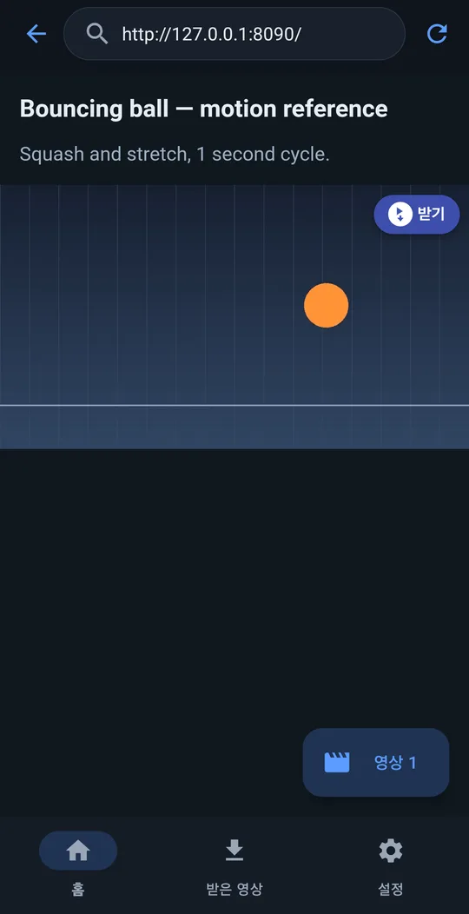
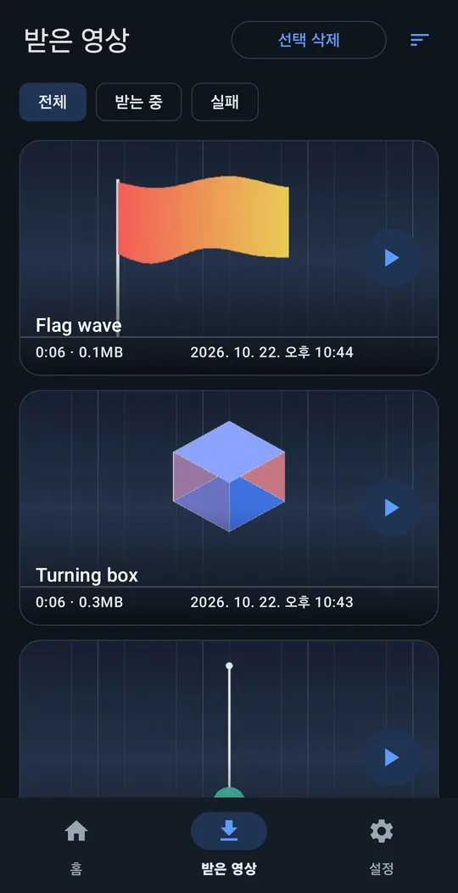
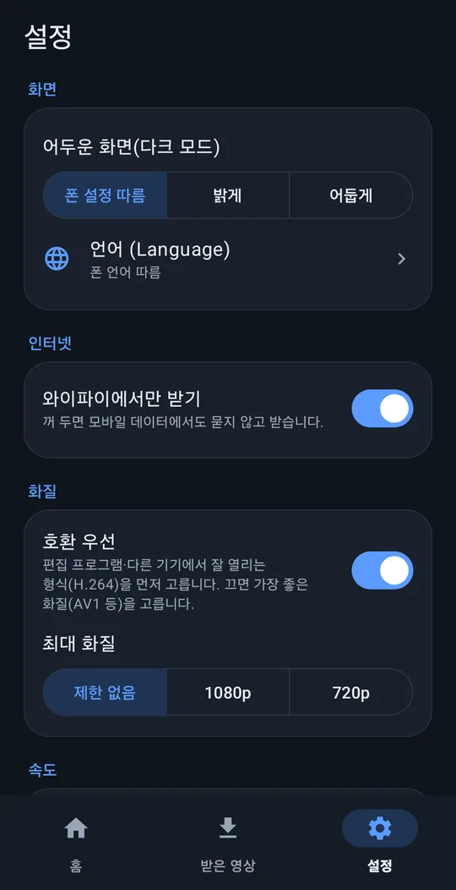

레퍼런스 영상, 폰으로 모으기.
영상 주소를 넣고 받거나, 앱 안 브라우저로 열어 재생한 뒤 영상 위 ⬇ 받기를 누르세요.
안드로이드 8.0 이상 · 64비트 ARM · 무료 · 광고 없음 · 계정 없음
이렇게 씁니다




움직이는 모습
주소를 넣고 받기를 누르면 바로 시작합니다. 앱을 나가거나 화면을 꺼도 진행 알림과 함께 계속 받습니다. (영상 속 화면은 영어 설정)
기능
주소 넣고 받기
많이 쓰는 영상 사이트 대부분에서 됩니다.
영상 위 받기 버튼
앱 안 브라우저에서 재생 중인 영상 위에 받기 버튼이 뜹니다. 주소로 안 되는 사이트도 많이 됩니다.
편집에 바로
동영상/VideoRef 에 저장. '호환 우선'이면 H.264+AAC 로 받아 편집 앱에서 바로 열립니다.
화면 꺼도 계속
화면을 꺼도 계속 받습니다. 와이파이에서만 받기, 최대 화질 설정.
10개 언어
English, 한국어, 简体中文, 繁體中文, 日本語, Español, Deutsch, Français, Português (Brasil), Русский. 밝게/어둡게.
보내는 정보 없음
광고·추적·계정 없음. 개인정보 처리방침
설치
받은 APK 파일을 폰에서 여세요. 물어보면 브라우저나 파일 앱의 '출처를 알 수 없는 앱 설치'를 허용하면 됩니다.
구글 플레이판도 준비 중입니다. 플레이 정책 때문에 받을 수 있는 사이트가 더 적고, 받기 프로그램은 앱 업데이트로만 바뀝니다. 두 판은 함께 설치할 수 있습니다.
문제가 있으면
설정 → 도움 → 오류 보고를 누르면 기록 파일이 첨부된 메일이 support@4dir.net 으로 써집니다. 소스와 문제 등록: 깃허브 (GPL‑3.0).
도움이 되셨다면 Ko‑fi 후원